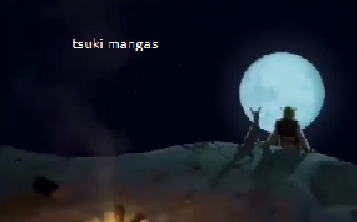

Até já...

O que aconteceu?
Não é surpresa para ninguém que o site está super lento e durantesemanas ele mal consegue ficar online, por tanto, decidimos fechá-lotemporariamente enquanto pensamos nas alternativas.
Já quando?
O tempo que for necessário. Não vamos nos apressar só para voltar o maisrápido possível. Queremos fazer as coisas com calma e bem.
O que aconteceu com o meu perfil?
Todos os perfis estão salvos e retornarão junto com o site. Nãorecomendamos o uso de leitores para guardar a lista, use um siteespecifico para isso.
Por que da manutenção?
Porque há muitas coisas que não estão certas no código geral do site. Ofront-end e back-end usam tecnologias desatualizadas e não foramcorretamente optimizada para uma demanda tão grande de usuários. Levatempo e não é nada fácil de mexer nele.
Atualmente possuímos apenasum desenvolvedor 'principal' porém bastante ocupado, pretendemos juntarmais membros da equipe para essas alternativas:
- Recriar o site do zero se baseando no que já temos porém comtecnologias atuais.
- Tentar consertar o site remendando o impossível.
Recomendações
| Mangá | Lista |
|---|---|